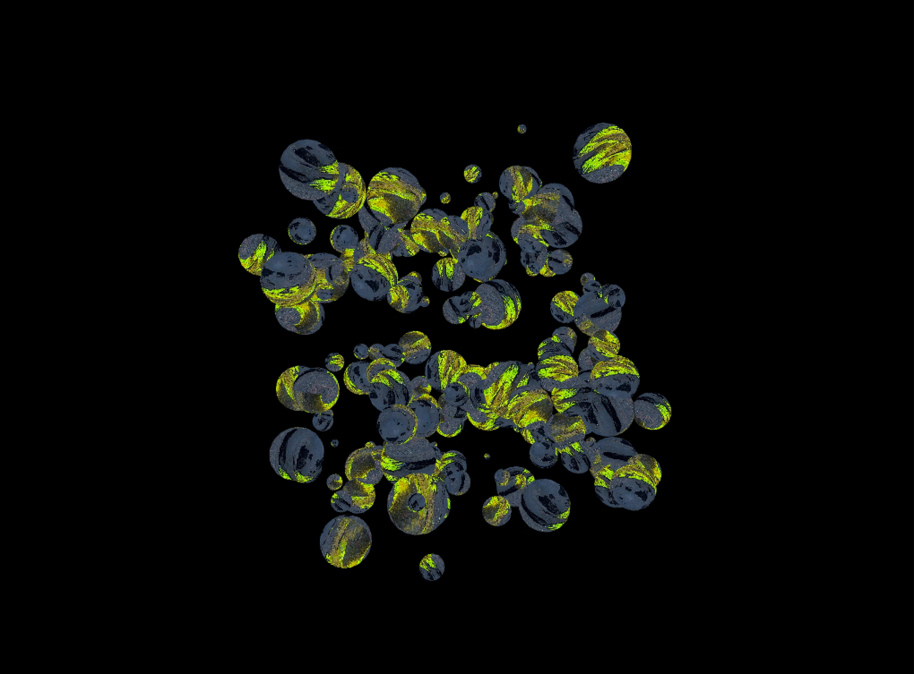
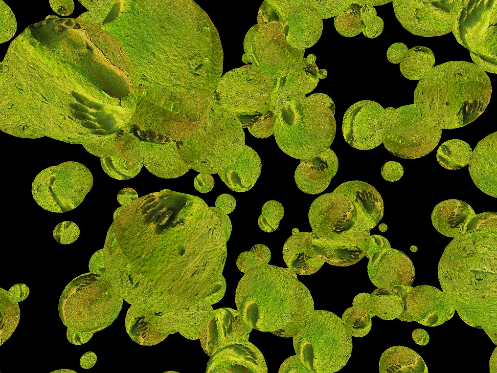
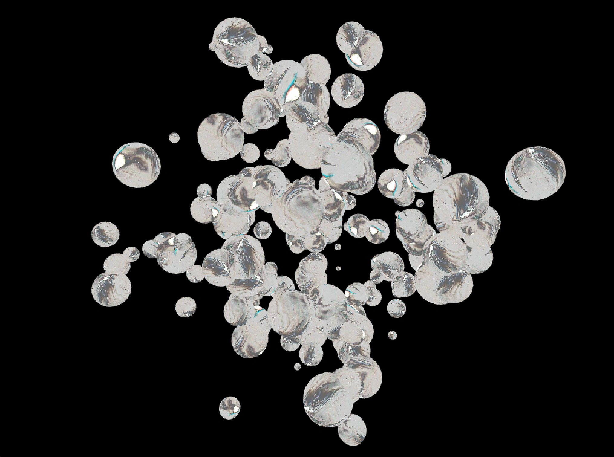

Смотреть видос
Важная инфа
Этот тутор ты можешь повторить в нашей песочнице
Материалы
Проджект файл
Крипи глаза на c++
Тутор
Продолжающим
Код
Смотреть видос
Важная инфа
Этот тутор ты можешь повторить в нашей песочнице
Материалы
Проджект файл
Крипи глаза на c++
В этом туторе рассмотрим, как с помощью OpenFrameworks создать генеративное облако из 3d глаз, которое будет плавать в пространстве, случайным образом менять положение и смотреть в разные стороны. Такой эффект может быть полезен в анимации, интерактивных проектах или просто как забавный эксперимент в креативном программировании.
Даша Бушенева
16/02/20025

Алгоритм
Чтобы запустить этот проект, тебе понадобится установленный openFrameworks — это бесплатный фреймворк для творческого кодинга на C++.
Шаг 1
Нужно подготовить изображение в любом редакторе. Растяните его в 2 раза по ширине, например, 1024×512 вместо 512×512. Сохраните в bin/data/ под именем eye.jpg. Теперь текстура готова к использованию.
Проект openFrameworks состоит из трех основных файлов: main.cpp, ofApp.h и ofApp.cpp. Main.cpp — точка входа в программу. Здесь находится функция main(), где мы настраиваем окно, и запускаем
наше приложение.
OfApp.h — заголовочный файл нашего приложения. Здесь объявлен класс ofApp, который наследуется от ofBaseApp. Проще говоря, это класс, внутри которого мы описываем всю нашу творческую логику — переменные и методы, отвечающие за настройку, обновление, прорисовку и взаимодействие.
OfApp.cpp — исходник с реализацией всех методов, объявленных в ofApp.h.
Тут главное понимать общую идею: main.cpp запускает приложение, а весь наш код с визуальными эффектами будет внутри методов класса ofApp.
Шаг 2
Перед началом работы добавим нужные переменные в класс ofApp.
Скопируй
ofEasyCam cam; // камера
int spaceRange = 1000; // диапазон координат
vector positions; // список позиций глаз
ofImage eyeImage; // текстура глаза
bool bRotate = false; // флаг вращения
float rotateAngle = 0; // угол поворота
Эти переменные задают структуру сцены. Где будут размещены глаза, как будет вести себя камера и будет ли происходить вращение всего облака.
Скопируй
void ofApp::setup(){
ofEnableDepthTest();
ofDisableArbTex();
ofSetBackgroundColor(0);
eyeImage.load("eye.jpg");
int numEyes = 100;
for(int i = 0; i < numEyes; ++i){
float x = ofRandom(-spaceRange, spaceRange);
float y = ofRandom(-spaceRange, spaceRange);
float z = ofRandom(-spaceRange, spaceRange);
positions.push_back(glm::vec3(x, y, z));
}
}
Здесь мы включаем тест глубины для корректной 3D отрисовки, отключаем ARB-текстуры для правильного наложения, устанавливаем черный фон и загружаем текстуру глаза. Затем генерируем 100 случайных позиций для глаз в пределах заданного диапазона spaceRange.
Цвет фона можно менять
Шаг 3
Теперь добавим немного движения. Мы не будем анимировать каждый глаз по отдельности, но сделаем, чтобы все облако глаз плавно вращалось вокруг вертикальной оси.
Скопируй
void ofApp::update(){
if(bRotate){
rotateAngle += 1.0f;
if(rotateAngle >= 360.0f){
rotateAngle = 0.0f;
}
}
}Функция update() вызывается каждый кадр. Если включено вращение, угол rotateAngle увеличивается. Когда он достигает 360°, мы сбрасываем его в ноль. Это позволяет сцене плавно вращаться.
Скопируй
void ofApp::draw(){
cam.begin();
if(bRotate){
ofRotateYDeg(rotateAngle);
}
eyeImage.bind();
float radius = 20;
for(auto &pos : positions){
ofDrawSphere(pos, radius);
}
eyeImage.unbind();
cam.end();
}Сначала запускается камера. Если включено вращение, поворачиваем всю сцену на угол rotateAngle. Привязываем текстуру глаза с помощью bind(), затем в цикле отрисовываем каждую сферу в заданной позиции через ofDrawSphere(). После отрисовки отключаем текстуру и завершаем камеру.
Шаг 4
При нажатии стрелки вверх добавляется новый глаз в случайной позиции. Стрелка вниз удаляет последний глаз, если они есть. Клавиша R включает или выключает автоматическое вращение сцены.
Скопируй
void ofApp::keyPressed(int key){
if(key == OF_KEY_UP){
float x = ofRandom(-spaceRange, spaceRange);
float y = ofRandom(-spaceRange, spaceRange);
float z = ofRandom(-spaceRange, spaceRange);
positions.push_back(glm::vec3(x, y, z));
}
else if(key == OF_KEY_DOWN){
if(!positions.empty()){
positions.pop_back();
}
}
else if(key == 'r' || key == 'R'){
bRotate = !bRotate;
}
}Теперь у нас есть облако из 3D-глаз, расположенных в пространстве, с текстурами и возможностью вращения.
Кастомизация
Для работы с цветовой палитрой используй Ramp (градиент) и RGBKey: задай фону любой оттенок
(не только черный), создавай сложные градиенты двойным кликом по Ramp для добавления новых цветов. Чтобы добиться нестандартных переходов, подключи Lookup.
А вот что получилось у редакции



Похожие статьи
Нодовые
Новичок
Туториал

Пушистый шум
Нодовые
Новичок
Туториал

Облако точек
Нодовые
Новичок
Туториал